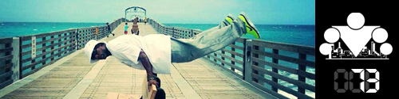
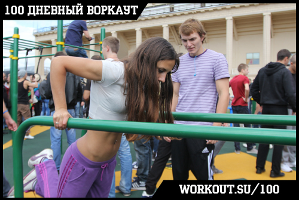

100 Дневный воркаут
<==== Вернуться к оглавлению
День 73. Отжимания на брусьях: мышцы и техника

Все инфо-пост этой неделе будут так или иначе связаны с различными упражнениями, и если вчера мы рассказали о том, как увеличить количество повторений в подтягиваниях (хотя схема отлично работает не только для них, но и для всех других упражнений), то сегодня пришло время рассказать о четвертом базовом упражнении в воркауте! И я говорю об:
Отжимания на брусьях

Это одно из ключевых (наряду с подтягиваниями, отжиманиями от пола и приседаниями), упражнений в воркауте, которое задействует большое количество мышц и суставов в нашем организме и направлено на развитие силы и объема грудных мышц и мышц рук (в первую очередь трицепсов).
Основные моменты
* Чем больше амплитуда движения, тем больше мышц задействуются в процессе
* Во время выполнения отжиманий держите мышцы рук, спины, живота и ног в напряжении
* Для максимального результата вам необходимо медленно опускаться и быстро (но плавно) подниматься
* Вы отжимаетесь за счет силы грудных мышц и мышц рук, только так
* Вдох на движении вниз, выдох на движении вверх
Техника безопасности
Отжимания на брусьях для неподготовленного человека могут быть довольно травмоопасным упражнением (чаще всего при неправильном выполнении страдают локти, плечи, лопатки, ключицы, запястья), поэтому следует выполнять приведенные ниже рекомендации по правильной технике:
* Движение должно проводиться по естественной траектории
* Движение должно быть ПОЛНОСТЬЮ контролируемым (!!!)
* Никаких рывков, резких движений или волн телом быть не должно
* Не задирайте голову вверх, но и не опускайте её слишком низко, смотрите перед собой или немного вниз перед собой
* При возникновении неприятных ощущений прекратите выполнение упражнения, немного отдохните и попробуйте другой вариант (например более узкие/широкие брусья, другую апмлитуду движения, другой угол наклона тела и т.д.)
Само упражнение можно разделить на 4 составляющие:
1) Положение упора на брусьях на прямых руках (лучше всего подобрать брусья шириной немногим более ширины плеч) 2) Опускание тела вниз за счет сгибание рук в локтях 3) Задержка в нижней точке 4) Возвращение из нижней точки в исходное положение за счет силы мышц
Видео обзор упражнения
К сожалению, такого видео обзора для отжиманий на брусьях, которые мы сделали для подтягиваний и отжиманий от пола у нас нет, поэтому выкладываем видео с прошлого весеннего запуска, посвященное этому упражнению. Оно немного менее информативно и полезно, но все же. И обещаем исправиться к следующей 100
Облегченные отжимания на брусьях
Если у вас пока не получается выполнять полноценные отжимания на брусьях, то мы бы рекомендовали вам делать больше отжиманий от пола, желательно в увеличенной амплитуде (с помощью упоров для отжиманий, или забравшись на брусья).
Полезные советы
Стартовая позиция.
Начинать всегда лучше с положения упора на прямых руках на брусьях, то есть с верхней точки, а не с нижней. Особенно, если вы начинающий. Потому что верхнее положение более безопасно, чем нижнее.
Ширина брусьев.
(добавил ogrudko) Это такой не очень регулируемый параметр (особенно, когда нет большого выбора мест для тренировок), который влияет на нагрузку, прокачиваемые мышцы и степень травматизма. Несмотря на общее правило, что более широкие брусья лучше подходят для тренировки грудных, а более узкие для тренировки трицепса, стоит помнить, что брусья должны быть вам комфортны. К сожалению, я видел много площадок, где брусья слишком широкие (реже - слишком узкие), и поэтому нормально на них отжиматься нельзя, а попытки поотжиматься даже в половину амплитуды могут привести к травмам плечевого сустава.
Поэтому, я хочу обратить ваше внимание, что вам должно быть комфортно отжиматься на брусьях по всей амплитуде движения. В противном случае вы будете сознательно или нет пытаться изменить свою технику таким образом, чтобы обрести этот самый комфорт, снижая эффективность упражнения и повышая вероятность получения травмы.
Гравитация.
Отжимания на брусьях гораздо более сложное упражнение, чем отжимания от пола, потому что сила гравитации тянет всё ваше тело вниз и приходится держаться только на руках, что может привести к травмам в плечевых, локтевых, кистевых суставах при отсутствии должной подготовки, или к растяжениям и травмам мышц.
Поэтому:
а) Уделите должное внимание изучению техники выполнения этого упражнения, начинайте с простых подводящих (простой упор на прямых руках на брусьях, отжимания на брусьях в неполной амплитуде и так далее).
б) ВСЕГДА контролируйте движение. Вы должны опускаться вниз силой мышц, и подниматься вверх тоже силой мышц. Если чувствуете, что не сможете выполнить следующий повтор с идеальной техникой, лучше слезть и добить мышцы отжиманиями от пола. Поверьте, падать с брусьев из-за отсутствия сил - не самая приятная в мире вещь.
Разные мышцы.
Отжимания на брусьях позволяют тренировать грудные и трицепсы с разной степенью нагрузки в зависимости от двух факторов: наклон тела и положение локтей относительно тела при сгибании. Если вы хотите в большей степени нагрузить грудные - то следует наклонять корпус вперёд, а локти сгибать в стороны. Если вы хотите в большей степени нагрузить трицепс - то следует держать корпус максимально прямо, а локти при сгибании должны "смотреть" не в стороны, а назад.
Амплитуда отжиманий.
Кто-то говорит, что для максимальной эффективности нужна и максимальная амплитуда, кто-то не соглашается и работает в частичной, ну а я скажу вам, что всё это индивидуально, и вам следует попробовать разные варианты и подобрать тот, который будет давать отдачу именно вам!
======> День 74. Как научиться делать выход силой на турнике?